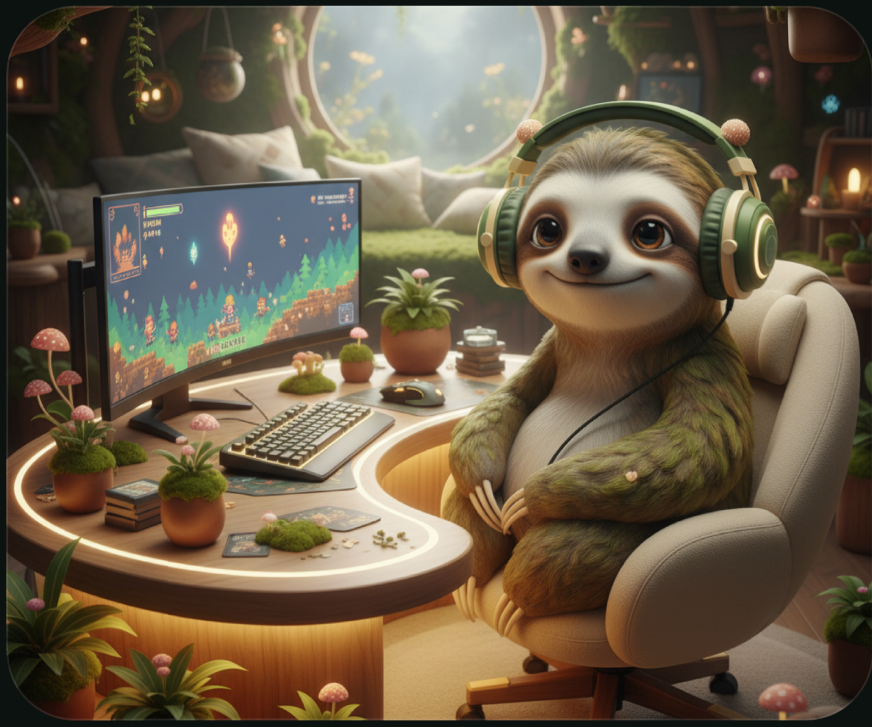
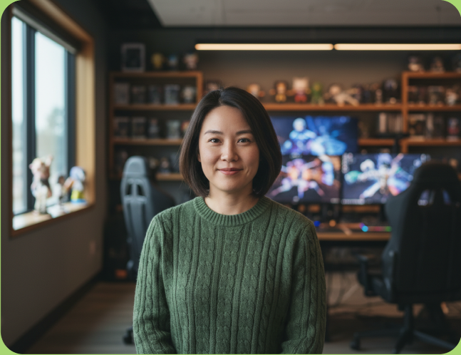
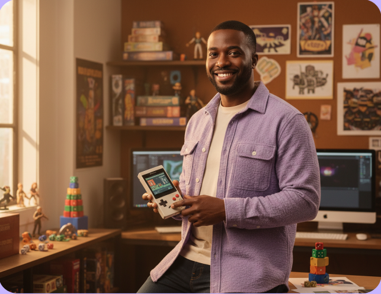
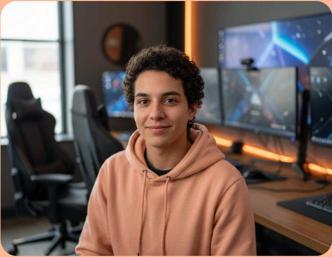

OUR ORIGIN QUEST
SageSloth is a beginner-friendly mindfulness course for players who want calmer queues, kinder self-talk, and a reset button that works away from the screen.

HOW WE PLAY
A useful practice fits between matches. We teach breathers, body checks, and attention cues in two to ten minutes.
Missed a day? Respawn. Progress is noticing sooner, not maintaining an impossible daily combo.
Mindfulness is not about becoming less competitive. It helps you play hard without carrying the tilt.
MEET YOUR PARTY
Built by meditation teachers, game designers, and people who have absolutely rage-quit.

Breathwork teacher, support main, and maker of the 90-second queue reset.

Turns behavioral science into quests that feel human, useful, and never preachy.

Former esports coach helping players recover focus after difficult matches.
A practical look at nervous-system resets between rounds.
Read note →
Small lessons, useful language, and refreshingly little guilt.
Read note →
Five shared cues for calmer comms and cleaner decisions.
Read note →